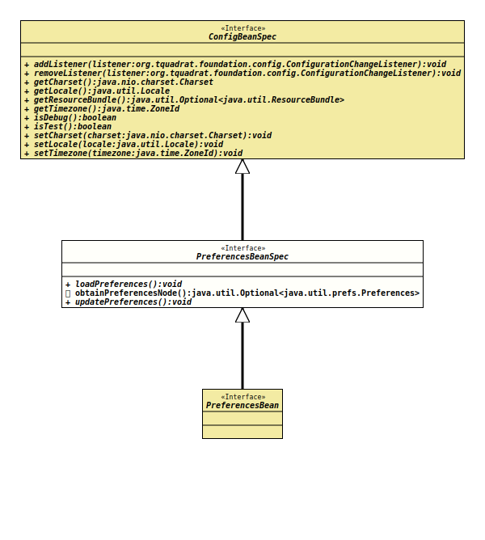

Package org.tquadrat.foundation.config
Interface PreferencesBeanSpec
- All Superinterfaces:
ConfigBeanSpec
@ClassVersion(sourceVersion="$Id: PreferencesBeanSpec.java 1061 2023-09-25 16:32:43Z tquadrat $")
@API(status=STABLE,
since="0.1.0")
public interface PreferencesBeanSpec
extends ConfigBeanSpec
When a configuration bean should be connected with
Preferences,
the respective configuration bean specification interface needs to extend
this interface.
Only user preferences are supported.
The preferences values will not be loaded automatically. A call
to
loadPreferences()
is required.
A call to
updatePreferences()
persists the respective value.
The name of the preferences node for the values is the class name of the configuration bean specification interface.
If the requirement is to initialise a property from a
SYSTEM Preference,
consider to use the
@SystemPreference
annotation instead of implementing this interface.
- Note:
-
- None of the methods in this interface can be called from
initData()!
- None of the methods in this interface can be called from
- Author:
- Thomas Thrien (thomas.thrien@tquadrat.org)
- Version:
- $Id: PreferencesBeanSpec.java 1061 2023-09-25 16:32:43Z tquadrat $
- Since:
- 0.0.1
- See Also:
- UML Diagram
-

UML Diagram for "org.tquadrat.foundation.config.PreferencesBeanSpec"
{kind=link}
-
Method Summary
Modifier and TypeMethodDescriptionvoidLoads the preference values from thePreferencesinstances connected with the configuration bean based on the specification that is extending this interface into the properties of that configuration bean.default Optional<Preferences> Returns the user preferences node that backs this configuration bean.voidUpdates the instances ofPreferences, that are connected to the configuration bean based on the specification that is extending this interface, with the property values of this configuration bean.Methods inherited from interface org.tquadrat.foundation.config.ConfigBeanSpec
addListener, getCharset, getLocale, getResourceBundle, getTimezone, isDebug, isTest, removeListener, setCharset, setLocale, setTimezone
-
Method Details
-
loadPreferences
void loadPreferences()Loads the preference values from thePreferencesinstances connected with the configuration bean based on the specification that is extending this interface into the properties of that configuration bean. -
obtainPreferencesNode
Returns the user preferences node that backs this configuration bean.- Returns:
- An instance of
Optionalthat holds thePreferencesinstance.
-
updatePreferences
void updatePreferences()Updates the instances ofPreferences, that are connected to the configuration bean based on the specification that is extending this interface, with the property values of this configuration bean.
-